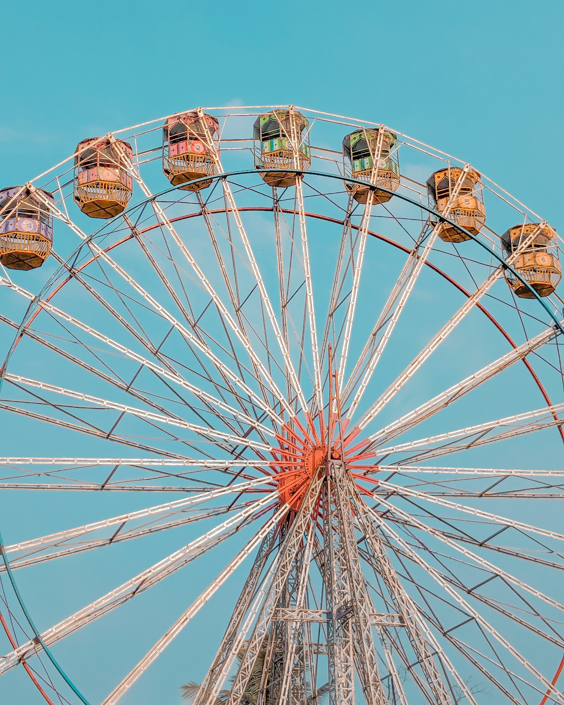

Photography
×
Featured on
Google Pixel
&
Google India
300K+
views on a single frame

THIRD_EYEF1.7 · PHOTOGRAPHER · BANGALORE · THIRD_EYEF1.7 · PHOTOGRAPHER · BANGALORE · THIRD_EYEF1.7 · PHOTOGRAPHER · BANGALORE · THIRD_EYEF1.7 ·
Mohit Bhaisare — Photography
mohit-bhaisare.vercel.app
third_eyef1.7